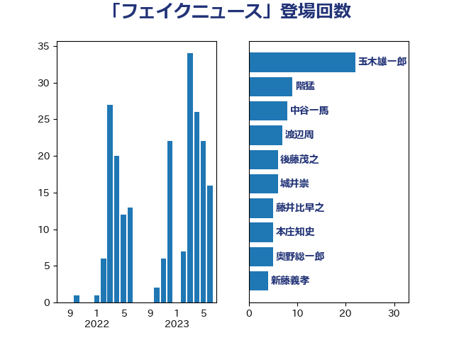

単語「フェイクニュース」

| 玉木雄一郎 | 国民民主党 | 22 回 |
| 階猛 | 立憲民主党 | 9 回 |
| 中谷一馬 | 立憲民主党 | 8 回 |
| 渡辺周 | 立憲民主党 | 7 回 |
| 後藤茂之 | 自由民主党 | 6 回 |
| 城井崇 | 立憲民主党 | 6 回 |
| 藤井比早之 | 自由民主党 | 5 回 |
| 本庄知史 | 立憲民主党 | 5 回 |
| 奥野総一郎 | 立憲民主党 | 5 回 |
| 新藤義孝 | 自由民主党 | 4 回 |
| 中野洋昌 | 公明党 | 4 回 |
| 道下大樹 | 立憲民主党 | 3 回 |
| 松本剛明 | 自由民主党 | 3 回 |
| 岡本あき子 | 立憲民主党 | 3 回 |
| 小野泰輔 | 日本維新の会 | 3 回 |
| 北神圭朗 | 無所属 | 3 回 |
| 佐藤正久 | 自由民主党 | 3 回 |
| 高木かおり | 日本維新の会 | 2 回 |
| 金子恭之 | 自由民主党 | 2 回 |
| 赤嶺政賢 | 日本共産党 | 2 回 |
| 西岡秀子 | 国民民主党 | 2 回 |
| 猪瀬直樹 | 日本維新の会 | 2 回 |
| 湯原俊二 | 立憲民主党 | 2 回 |
| 橘慶一郎 | 自由民主党 | 2 回 |
| 星北斗 | 自由民主党 | 2 回 |
| 斎藤アレックス | 国民民主党 | 2 回 |
| 岸真紀子 | 立憲民主党 | 2 回 |
| 岩谷良平 | 日本維新の会 | 2 回 |
| 山下貴司 | 自由民主党 | 2 回 |
| 國重徹 | 公明党 | 2 回 |
| 和田有一朗 | 日本維新の会 | 2 回 |
| 吉田宣弘 | 公明党 | 2 回 |
| 伊東信久 | 日本維新の会 | 2 回 |
| 中川正春 | 立憲民主党 | 2 回 |
| 上川陽子 | 自由民主党 | 2 回 |
| 青柳仁士 | 日本維新の会 | 1 回 |
| 鈴木英敬 | 自由民主党 | 1 回 |
| 金子道仁 | 日本維新の会 | 1 回 |
| 近藤昭一 | 立憲民主党 | 1 回 |
| 船田元 | 自由民主党 | 1 回 |
| 美延映夫 | 日本維新の会 | 1 回 |
| 神谷宗幣 | 参政党 | 1 回 |
| 清水真人 | 自由民主党 | 1 回 |
| 浮島智子 | 公明党 | 1 回 |
| 水岡俊一 | 立憲民主党 | 1 回 |
| 榛葉賀津也 | 国民民主党 | 1 回 |
| 松原仁 | 立憲民主党 | 1 回 |
| 朝日健太郎 | 自由民主党 | 1 回 |
| 新垣邦男 | 立憲民主党 | 1 回 |
| 斎藤洋明 | 自由民主党 | 1 回 |
| 掘井健智 | 日本維新の会 | 1 回 |
| 岸田文雄 | 自由民主党 | 1 回 |
| 山田太郎 | 自由民主党 | 1 回 |
| 小野田紀美 | 自由民主党 | 1 回 |
| 小野寺五典 | 自由民主党 | 1 回 |
| 小熊慎司 | 立憲民主党 | 1 回 |
| 安江伸夫 | 公明党 | 1 回 |
| 嘉田由紀子 | 無所属 | 1 回 |
| 古賀之士 | 立憲民主党 | 1 回 |
| 伊藤俊輔 | 立憲民主党 | 1 回 |
| 中川康洋 | 公明党 | 1 回 |
| 中司宏 | 日本維新の会 | 1 回 |
| 三浦靖 | 自由民主党 | 1 回 |